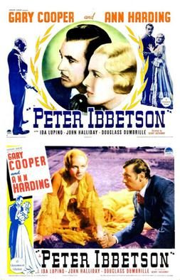
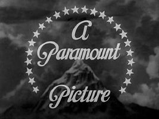

Peter Ibbetson

Starring: Gary Cooper, Ann Harding, John Halliday
Director: Henry Hathaway
Writer: Waldemar Young, Constance Collier
Producer: Louis D. Lighton
Peter Ibbetson is a 1935 American black-and-white drama/fantasy film directed by Henry Hathaway and starring Gary Cooper and Ann Harding. The film is loosely based on the 1891 novel of the same name by George du Maurier. A tale of a love that transcends all obstacles, it relates the story of two youngsters who are separated in childhood and then drawn together by destiny years later.
Trivia
- Nominated for: Academy Award for Best Score, Adaptation or Treatment.
- Based on Peter Ibbetson (novel by George du Maurier).
- Robert Donat and Fredric March were reportedly considered for the role of Peter Ibbetson, while Miriam Hopkins was first offered the role of Mary.
- Gary Cooper, who had previously acted in Westerns and "heroic dramas" (e.g. A Farewell to Arms) was cast against type by Hathaway, a move that heightened "the aesthetic uncanniness of the film". According to The New York Times, the production budget exceeded $750,000.
- Director Hathaway was inspired by the original illustrations in du Maurier's novel in his approach to various scenes and his emphasis on repeating themes and symbols.
Filming Locations
- Some location filming took place in Laguna Beach, California.
Previous Showings
1 Run • 0 Festivals
All runs on record (1):
- July 31 - August 1, 1997w/ Topper